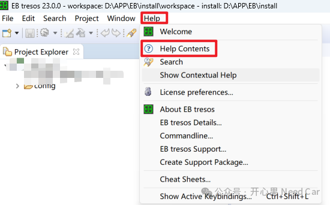
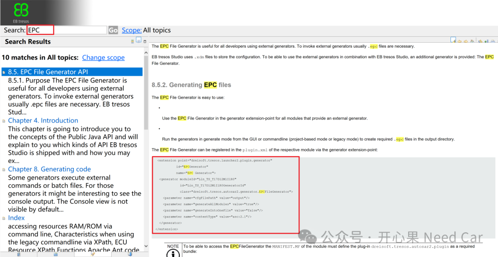
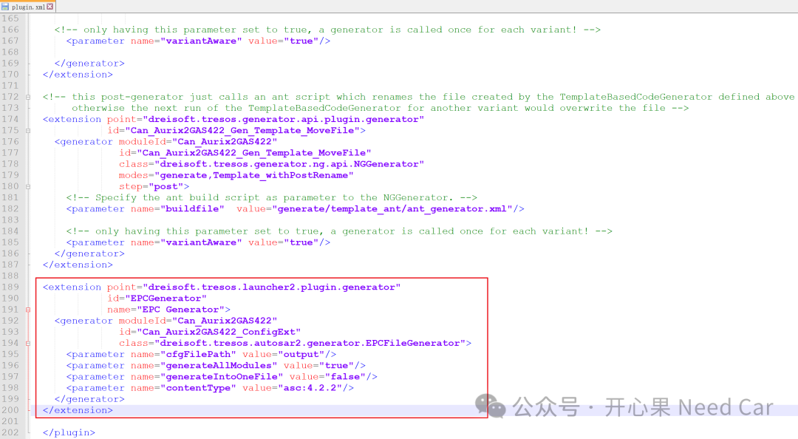
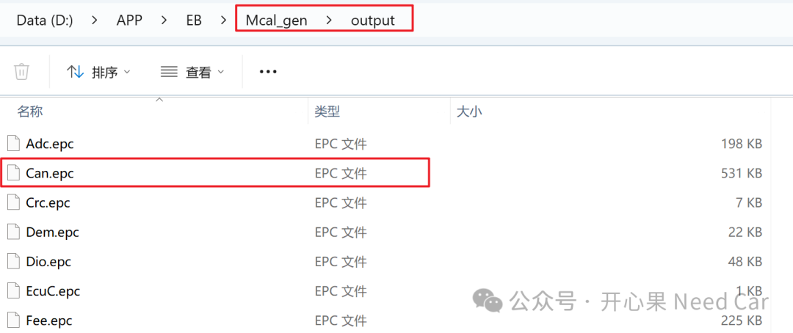
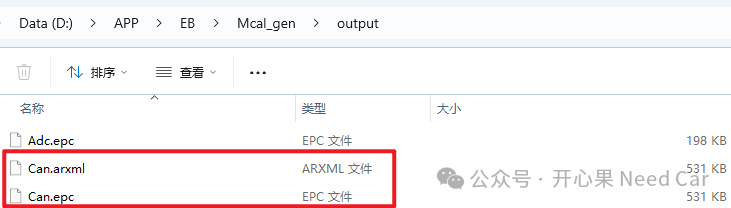
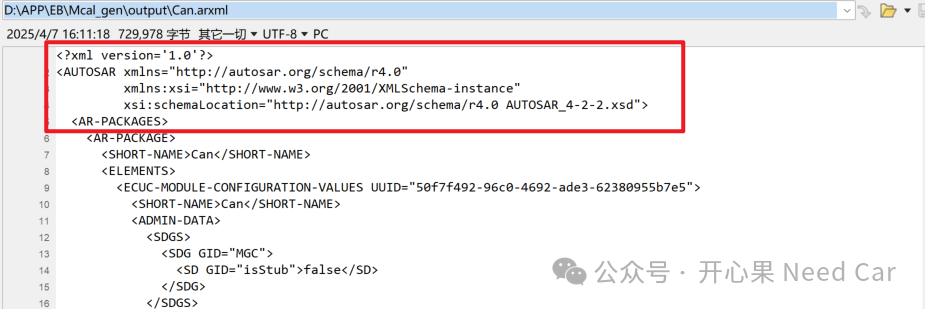

开心果 Need Car · 2025-04-10T06:39:00+08:00 · 微信原文
1、环境描述
2、*.epc文件无法生成的修复措施



<extension point="dreisoft.tresos.launcher2.plugin.generator"id="EPCGenerator"name="EPC Generator"><generator moduleId="Can_Aurix2GAS422"id="Can_Aurix2GAS422_ConfigExt"class="dreisoft.tresos.autosar2.generator.EPCFileGenerator"><parameter name="cfgFilePath" value="output"/><parameter name="generateAllModules" value="true"/><parameter name="generateIntoOneFile" value="false"/><parameter name="contentType" value="asc:4.2.2"/></generator></extension>

3、*.epc文件的使用


往期精彩回顾